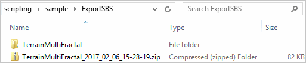

Dependency path storage method
Dependencies management
Exporting a package with its dependencies
sbsexporter helps exporting a package with its dependencies and resources in a self-containeddemos.demoExportWithDependencies() demonstrates this feature and using the SBSExporter.export() function.python demos.py -fct: demoExportWithDependencies -args: "../sample/argsDemoExportWithDependencies.xml"
The scripts will generate the folder sample/ExportSBS/ with two exports of the TerrainMultiFractal substance, one zipped and the other one in a folder.
{kind=link}
The following code exports a package into a self-contained directory:
from pysbs import substance, sbscleaner, sbsexporter
# Parse the document to export
sbsDoc = substance.SBSDocument(aContext, aFileAbsPath)
sbsDoc.parseDoc()
# You may want to clean up the Substance before exporting it
# This will remove all isolated nodes, useless parameters, unused dependencies from the Substance
sbscleaner.cleanSubstance(sbsDoc) # User can pick whatever he wants to clean, see signature of sbscleaner.cleanSubstance()
sbsDoc.writeDoc()
# Create an exporter
aExporter = sbsexporter.SBSExporter()
# Export the package into an archived self-contained package, in the folder aDestFolderAbsPath
# The resources and dependencies of this package will be included in the archive, including the ones referred by the alias sbs://
aResultingArchive = aExporter.export(aSBSDocument = sbsDoc, aExportFolder = aDestFolderAbsPath,
aBuildArchive = True, aAliasesToExport = ['sbs'])
# Same as before, without archiving the resulting folder
aResultingPath = aExporter.export(aSBSDocument = sbsDoc, aExportFolder = aDestFolderAbsPath,
aAliasesToExport = ['sbs'])
Impact propagation
sbsimpactmanager for propagating changes.from pysbs import context, sbsimpactmanager
aContext = context.Context()
aSBSFile = 'myAbsPath/ToSubstance.sbs' # The Substance to look for
aTreePath = 'myAbsPath/ToTree/' # The folder tree to browse
# Getting all the Substances referencing another Substance
IM = sbsimpactmanager.SBSImpactManager()
referencingSBS = IM.getAllSubstancesWithDependencyOn(aContext, substancePath=aSBSFile, withinTree=aTreePath)
# Updating all references of a Substance that has been moved to another path
# This process can be interactive or not
aNewPath = 'myNewAbsPath/ToSubstance.sbs'
updatedSBS = IM.declareSBSMoved(aContext, oldPath=aSBSFile, newPath=aNewPath, withinTree=aTreePath, interactiveMode=True)
Get all substance dependencies recursively
This API allows you to get a list of all the substance dependencies from a substance file or a directory (can be a tree directory).
For each dependency found a status is given like if the file exist or if there is a warning like a wrong substance version.
Use the module sbsimpactmanager, more details in docstring
from pysbs import context, sbsimpactmanager
# init an impactmanager instance with a context
im = sbsimpactmanager.SBSImpactManager(context.Context())
# get a dependencies tree of a sbs file
result_tree = im.getSBSTreeDependencies("/tmp/a/file.sbs", escapeDefaultSbs=True, escapeMismatchVersion=False, checkMissingFile=True)
# same for a directory tree
# result_tree = im.getSBSTreeDependenciesForAllSubstanceInTree("/tmp/a/substance/directory", escapeDefaultSbs=True, escapeMismatchVersion=False, checkMissingFile=True)
# get missing dependencies
missing_files = im.missingFiles
# get mismatch version dependencies
mismatch_files = im.mismatchVersionFiles
# reset impact manager
im.reset()
Dependency path resolution method
- Since 2019.1, Designer has two different dependency path storage methods.
The old one which is the default behaviour, is relative storage. Directory that are not subdirectories of the package.sbs will be replaced by a dotdot symbol (dotdot or ../ in a path resolution mean “parent directory” or “go up one directory”).
The second method is a absolute storage. Dependencies that are not subdirectories of the package they will be written as absolute paths.
This option is handled by the Preferences > Project > General > Dependencies Path > …absolute paths parameter of the sbsprj file.
This choice can be configured from the ProjectMgr. If you instantiate a ProjectMgr with a sbsprj file or if you parse it (with .parseADoc) it will be used in the pysbs execution context. You can retrieve this option or tweak the value using the following functions:
# Get dependency path storage method
aEnumDepsMethod = aProjectMgr.getDependenciesPathStorageMethod()
# Set dependency path storage method
aProjectMgr = context.ProjectMgr(aSbsPrjFilePath=sbsPrj)
aProjectMgr.setDependenciesPathStorageMethod(sbsproject.SBSPRJDependenciesPathStorageMethods.ABSOLUTE)
# or
aProjectMgr.setDependenciesPathStorageMethod(sbsproject.SBSPRJDependenciesPathStorageMethods.RELATIVE)
Project Manager How To contains more information about the sbs project manager.